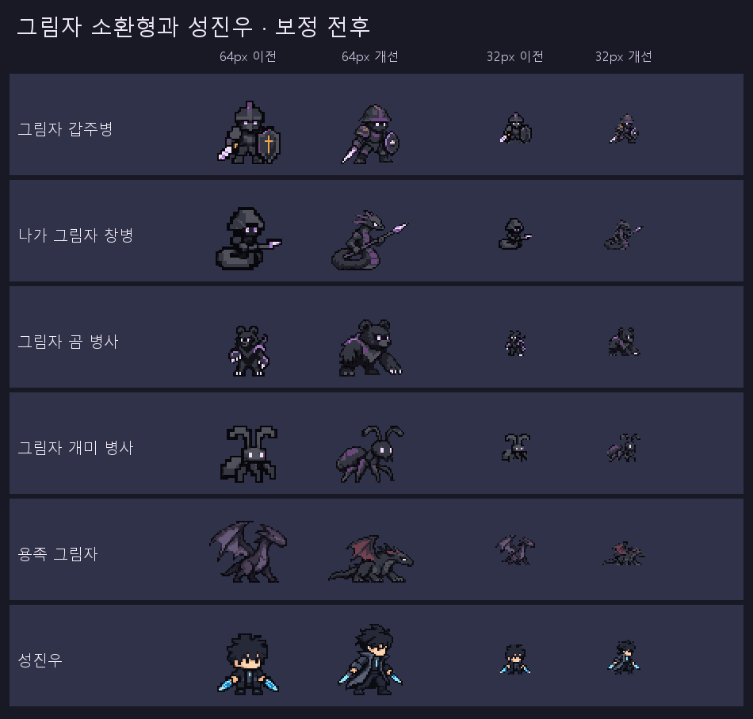
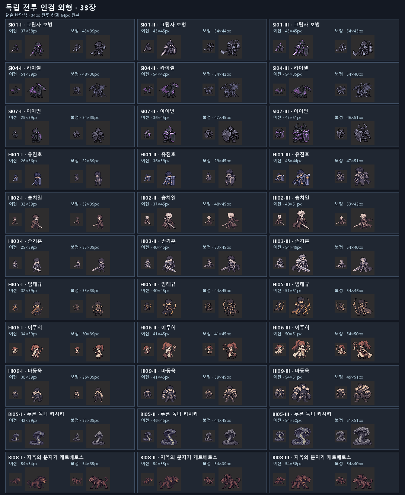
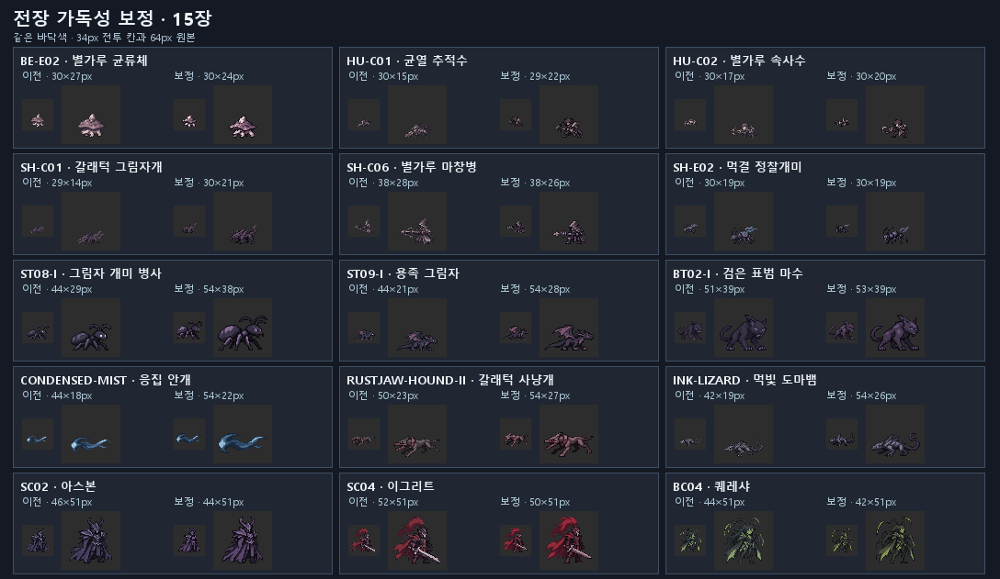
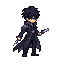

유닛 도트 스프라이트
아군 타워 30계통, 외신 적 28종, 파견 30종과 일꾼 3종의 세 단계, 지휘관 15명의 도트를 모았습니다. 각 PNG는 64×64 픽셀이며, 한 캐릭터에 불투명 색상을 최대 10개 사용합니다. 편성과 원작 근거 · 지휘관 설정
외신 적은 모두 화면 왼쪽을 향합니다. 신규 적 20종의 기본형·정예형·최종형은 몸의 기본 윤곽과 강조색을 공유하며, 뿔·턱·무기 등의 형태로 단계를 구별합니다.
스프라이트를 불러오는 중…
아이언 계열 · 방패 전용
그림자 방패병, 중장 그림자 방패병, 아이언이 모두 방패 한 개를 듭니다. 방패병은 빈 주먹을 들고, 중장 방패병과 아이언은 빈손을 방패 쪽에 두어 방어 자세를 잡습니다. 아이언 파견 유닛도 같은 도트를 씁니다.
아군 타워 · 3회 검수
그림자·헌터·마수의 미진화체, 1차 진화체, 2차 진화체 총 90장을 확인했습니다. 정상 크기와 전장 축소 크기에서 오른쪽을 보는 ¾ 시점, 각진 명암 덩어리, 진화 단계의 실루엣을 비교했습니다.
그림자 1단계와 성진우 도트 보정
10계통의 소환형을 비교해 갑주병·나가 창병·곰 병사·개미 병사·용족 그림자를 골랐습니다. 갑주병은 방패병과, 용족은 비룡과 실루엣을 구분했고 나가·곰·개미는 종족별 특징을 선명하게 그렸습니다. 성진우는 사선으로 뻗은 두 단검과 긴 코트, 비대칭 앞머리가 보이도록 다듬었습니다.

아군과 적 비교
전장 가독성과 독립 파견 도트
아군과 픽셀을 공유하던 파견 11계통의 세 진화 단계를 모두 별도로 그렸습니다. 아이언은 무검 대방패와 육각 삽입판, 카이셀은 사각 결정 전송기로 구별합니다. 아군·파견 사이의 공유 경로와 동일 RGBA는 0건입니다.

별가루 마창병은 창끝·손·발을 분리했습니다. 낮은 마수와 정찰병은 등·목·발 사이 간격을 살리고, 어두운 지휘관은 투구와 견갑의 중간 명암을 키웠습니다. 파견 유닛에는 푸른 마름모 표식을 붙입니다.


아군 타워 · 30계통
외신 웨이브 적 · 28종
초기 파견 도트 · 30종
일꾼 · 3종
지휘관 · 15명
성진우 · 그림자 군주
최종인·차해인·민병구와 안타레스·혹한의 군주의 인간형 비율을 참고했습니다. 성진우는 몸의 약 3분의 1을 차지하는 머리, 짧은 몸통, 한 발을 살짝 앞에 둔 자세로 설계했습니다. 높게 접힌 흑연색 칼라와 은청색 쌍단검으로 실루엣을 구분합니다. 성진우 모션 보기
